文章歸檔
2025 年 9 月文章
本月共 15 篇 Drugnews 分析，依時間倒序呈現。
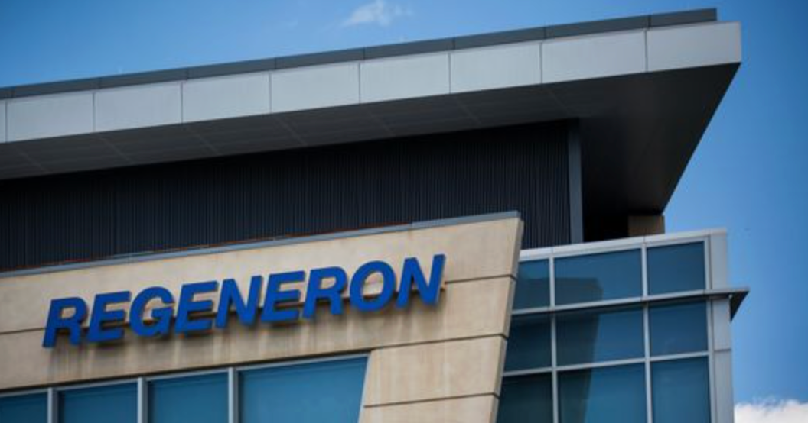
【製藥巨頭發展史20】再生元 (Regeneron) 如何從 Biotech 成長為 MNC？
2020年4月初的某天清晨，一輛銀色轎車穿過紐約街頭，一位頭髮花白的男士坐在後座上，面容有幾分憔悴。在過去的兩三個月內，他每天只睡四、五個小時，即使是絕大多數紐約人都開始居家辦公的時候，他仍然每天都去公司實驗室報到。在冷清的街道上，他的汽車偶爾才與另一輛車交匯，這座城市已經不復存在他過去60年成長和
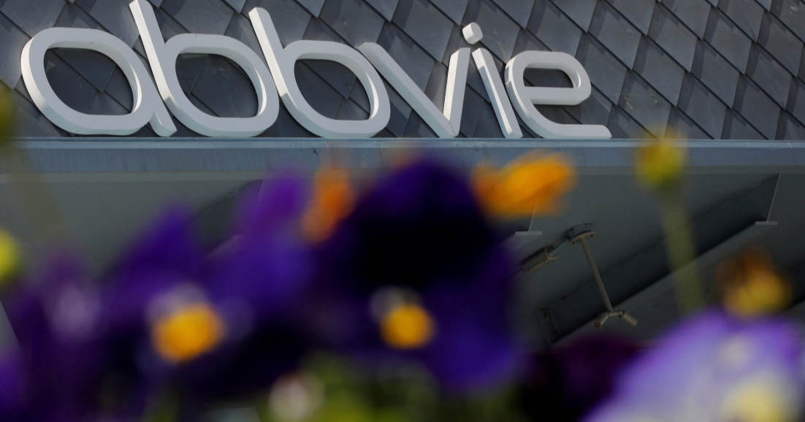
【製藥巨頭發展史19】曾經的藥王艾伯維(Abbvie) 招招精狠！
2020年3月下旬，美國東部的陽光像水晶一樣地照進了芝加哥一間格調簡約卻又設施豪華的辦公室內。室內的溫度很舒適，但仍封鎖不了窗外的寒意，2020年對整個地球都是異常艱難的一年。一位下顎內收、眼光如炬的男士坐在寬大舒適的辦公桌前。他對著視訊螢幕上的對方和公司其他高管，聲音平靜且平和地說：「好的，沒有問
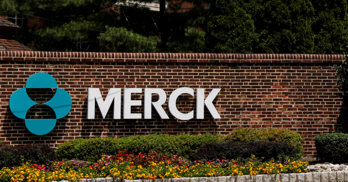
【製藥巨頭發展史18】藥王不在的 默沙東(MSD) 焦慮大家都看得見
01 一騎絕塵的哈姆雷特王子 2009年，風雪漫天的冬季又一次光臨了與波士頓緊鄰的小城麻省劍橋（Cambridge）。一位年輕人踏著街道上厚厚的積雪，重新裹了裹圍巾，走向自己的實驗室。他來到這個城市已經好幾年，但這個冬天似乎特別寒冷。畢竟，對任何一個在事業上有睏頓的年輕人，冬天的氣溫總要低幾度。
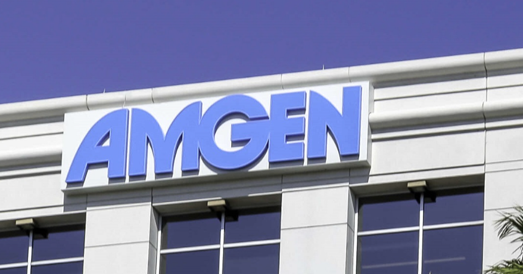
【製藥巨頭發展史17】安進（Amgen）的法律能力你必需懂？
1981年初夏，在某一期的《科學》期刊上刊登了一則極為簡單的徵才廣告，一家科技新創公司要招募一名新藥研究員。可能這家公司想要省點錢，因此這則廣告的字數有限，既沒公司名稱，也沒職位介紹，並沒有引起多少讀者的注意。不過，還是有位四十歲的科學家給該公司遞了履歷，這點有限的廣告費沒有白花。這位求職者似乎在其
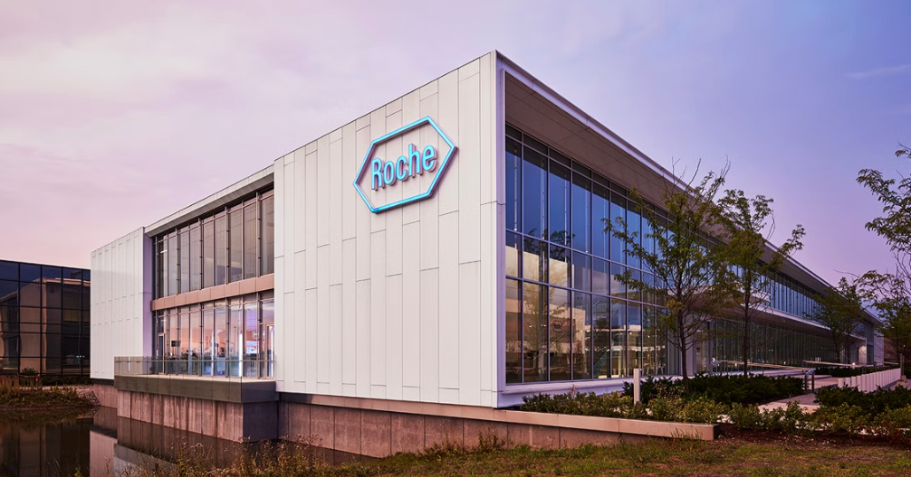
【製藥巨頭發展史16】羅氏(Roche)吞下超新星 基因泰克(Genentech)，自此高枕無憂？
1999年的一個早晨，美國舊金山市，一位內心深沉憂傷的中年人為自己安排了一次特別的醫院探訪。出發前，他以為自己已經做好了足夠的心理準備，但當房門打開的那一瞬間，他看見病床上憔悴無言的老友向自己投來了一個虛弱無比的微笑，一顆心還是猛烈地顫抖起來，眼淚不禁奔湧而出。面前這位被晚期腦癌折磨到一句話都不能再
【製藥巨頭發展史15】有了再生元的賽諾菲(Sanofi)，真正的絕招是啥?
01 一顆治癒人心的良藥靈丹 1998年，美國舊金山市的一家醫院病房裡，一個像洋娃娃一般漂亮的寶寶甦醒過來，用她無辜的大眼睛看了看這個世界。寶寶的床邊，一位31歲的男子慈愛而溫柔地握著她的小手，內心卻有一種被揉碎了五腑六髒般的痛苦。剛在醫生的辦公室裡，他被告之自己剛剛15個月大的女兒Megan被確
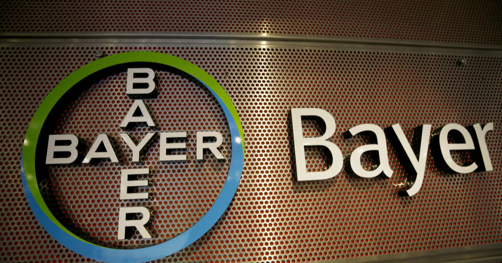
【製藥巨頭發展史14】似乎 東山不再起的百年藥企，拜耳(Bayer)
01 不再被信任的CEO 2019年4月，德國勒沃庫森（Leverkusen）乍暖還寒。一個頭髮微禿的中年男士灰頭土臉地坐在會議中，承受著眾多投資者對他一浪高過一浪的指責。看到大家齊刷刷地投過來那種失望而憤怒的眼神，他只想逃避。如果此時此刻地上能夠裂出一道縫，相信他會毫不遲疑地鑽到裡面。 2016
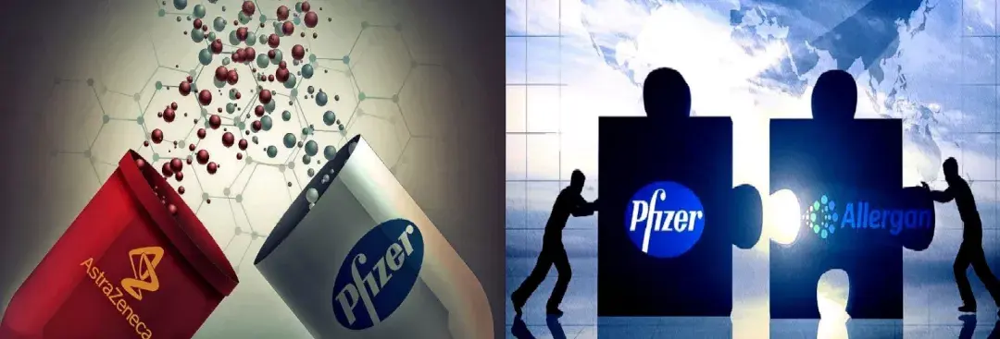
【製藥巨頭發展史13】宇宙大藥廠輝瑞(Pfizer)，還有併購以外的法寶嗎？
01 一場寒冷的董事會議 2010年12月4日，紐約曼哈頓中城區的一幢豪華辦公大樓裡，一位中年男子勉為其難地向一間會議室走去。雖然他不願意麵對這一刻，但公司內部的政治鬥爭已經持續了相當長的一段時間，有一些面對面的衝突是逃避不了的。秘書把門打開之後，他看見自己所熟悉的幾位董事會成員面色鐵青地坐在裡面
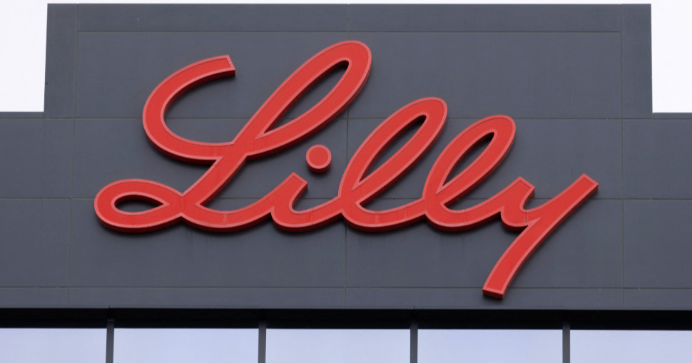
【製藥巨頭發展史12】新的減肥藥王禮來(Lilly)，自主研發究竟能走多遠？
01 百憂解的問世 2014年8月，美國加州警方接獲報警電話後，便火速趕往位於克里夫海地的一棟豪宅。當他們打開門後，發現住宅的男主人在家中自縹身亡。讓他們震驚的是，死者竟是時年63歲的電影巨星羅賓威廉斯（Robin Williams）。這怎麼可能？他所演出的一系列電影角色都曾深深滋養過我們的靈魂：
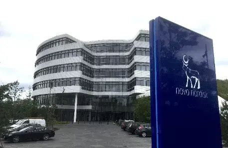
【製藥巨頭發展史11】諾和諾德(Novo Nordisk) 想靠GLP-1通殺全場?
01 一城輝煌再下兩城 2020年5月的一天，丹麥首都哥本哈根在夢幻般清澈的藍天白雲中迎來了一年最好的季節。一位中年男子望著窗外一幢幢童話般的房子，眼神中有一份禁不住的喜悅和滿足。手機再次響起'叮咚'的一聲，他低頭一看，又一次會心的一笑。自從新聞發布以後，他已經接到了無數朋友和同行的簡訊與電話，祝
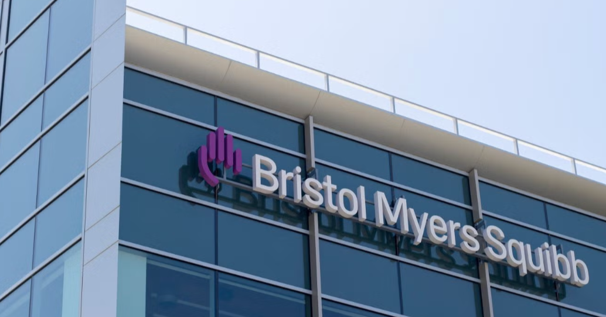
【製藥巨頭發展史10】必治妥施貴寶(BMS)的興衰轉身與新週期
01 世紀名藥，花落誰家 1977年，紐約曼哈頓每一天都繁華如昔。在白天的車水馬龍和夜晚的炫目霓虹中，它彷彿時時刻刻都在向世界宣告，「我就是地球的中心，我就是經濟的心臟」！然而，曼哈頓最北部的一間實驗室內，一位頭髮黝黑的白人女性正專注於顯微鏡和瓶瓶罐罐之中，她那份平和寧靜的神態與咫尺之外的喧囂有著
【製藥巨頭發展史9】跨越300多歲的葛蘭素史克（GSK）能否再次回春？
2015年3月初的某一天，春雨之後，緊鄰英國倫敦的布倫特福德市寒冷如冬。一間氣派豪華的會議室中，端坐著眾多舉止優雅且衣著光鮮的商業人士。在最中央的位置上，一位髮線退到了後腦勺的中年男士在厚厚的一疊法律文書上一一籤上了自己的名字。在所有人目光的聚焦之下，他像平常一樣表情鎮定，沒有人看得出他此時此刻的心
【製藥巨頭發展史8】阿斯特捷利康(AZ)，如何從被收購走到光榮稱霸？
01 守城者：索維奧與阿斯特捷利康的危機逆轉 2014年，新年後的一個早晨，英國劍橋市保持著千禧年不變的優雅與寧靜。由於世界名校劍橋大學的存在，這座10萬多人口的小城市有著不尋常的歷史和文化底蘊。它淳樸的田園風光中點輟學著各種時代的建築，有十五世紀哥德式的，也有十九世紀維多利亞式的，當晨光灑滿了田
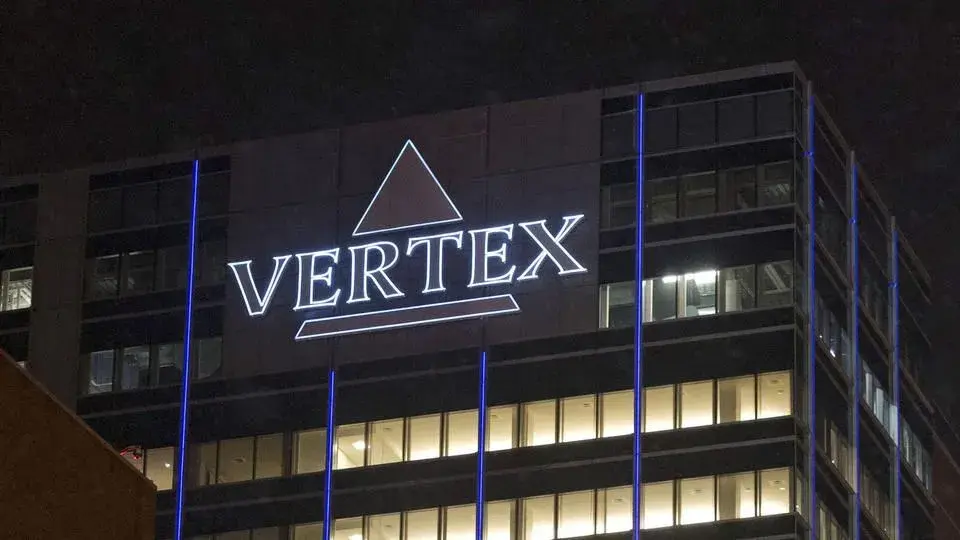
【製藥巨頭發展史7】福泰製藥 (Vertex)傳奇
01 被夢想逼到創業之路的一代英才 1989年，一位相貌老沉、髮際線靠後、留著濃密絡腮鬍子的男士，在他的新公司門口拍下了一張照片。他的笑容中有種堅定的樂觀，厚厚的鏡片也擋不住他眼神裡的雄心壯志。如果不說，誰也看不出這位男士才38歲。推開門，這家公司不過是一間又擁擠又簡陋的實驗室，一個月前它才剛從一
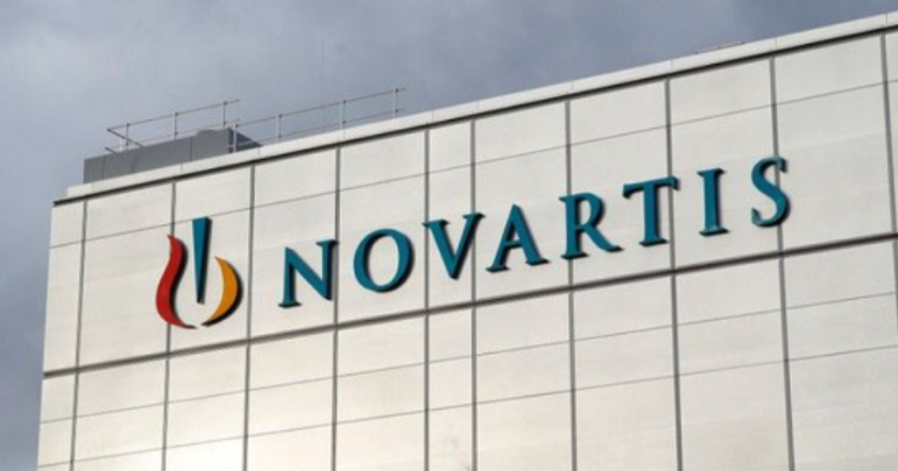
【製藥巨頭發展史6】當規模遇上聚焦：諾華(Novartis) 如何用「剝離＋併購」翻身為藥王
01 一場寒冷的大規模裁員 2011年底的某天下午，兩位男士焦急不安地走進了一間超大的辦公室，其中一位手中捧著一份厚厚的報告。看到了辦公桌後的另一位男士，他們不約而同地先後說道：“我們四年前獲批上市的藥品最近的臨床試驗發現了一些頗為嚴重的副作用，公司的研發部門與獨立的安全顧問委員會都建議提早結束該